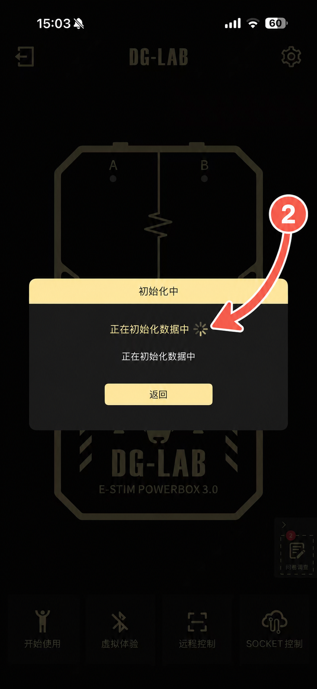

第一次使用 · 按顺序操作
从下载到第一次连接
不需要 Python 或 Node.js。先用纯净游戏完成连接测试，确认正常后再启用 Mod。
下载并完整解压
- 下载 ZIP 后，在文件上点击右键并选择“全部解压”。
- 不要直接在压缩包预览窗口里运行程序。
- 进入解压后的文件夹，双击
ManakaQmlControlCenter.exe。 - 阅读使用协议；不同意时直接退出。
如果 Windows SmartScreen 出现提示，请先核对下载来源和页面上的 SHA-256，再决定是否运行。
选择正确的游戏目录
在“设备与游戏”页面选择包含以下文件的文件夹：
SecretFlasherManaka ├─ SecretFlasherManaka.exe └─ SecretFlasherManaka_Data
- 游戏保持关闭。
- 点击“安装插件”。纯净游戏会自动安装 BepInEx 和遥测插件。
- 从控制中心启动游戏。第一次初始化可能较慢，先等待一到两分钟。
用 DG-LAB 3.0 App 扫码
手机和电脑需要连接同一个局域网。先连接实体设备，再连接服务器。




二维码里的 IP 地址由电脑当前网络自动生成。换电脑或换网络后地址变化是正常现象。
第一次只用低强度
心率开始90
心率最高160
输出范围5–30
安全硬上限30
- 连接前先保持“大型暂停输出”处于暂停状态。
- 确认手机和控制中心均显示已连接。
- 确认安全硬上限后，再解除暂停。
- A 通道跟随心率，B 通道跟随游戏动作；Climax 会联动 A/B。
软件暂停不是硬件紧急停止。出现疼痛、灼热、麻木、眩晕或异常输出时，立即断开设备或关闭实体主机。
完成三个暂停测试
- 点击控制中心“暂停输出”：A/B 应立即停止，再次点击可以恢复。
- 游戏内按 Esc：游戏暂停期间应停止功率。
- 退出游戏：控制中心应检测退出并停止残留输出。
核心连接全部正常后，再进入 Mod 管理器。第一次只启用一个 Mod；V1/V2 任务要先安装相应的 CustomMission 前置插件。
遇到问题时记录这些信息
- 控制中心版本、游戏版本和游戏目录。
- 手机与电脑是否在同一网络。
- A/B 哪个通道没有输出，当时的心率和动作。
- 事件记录页面与 BepInEx 控制台最后几行截图。
也可以回到支持与交流扫描 QQ 群二维码。